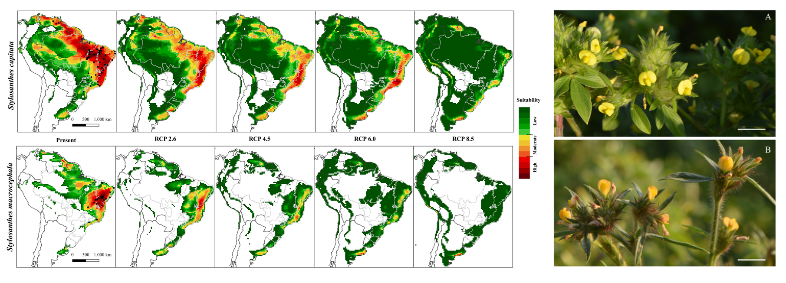
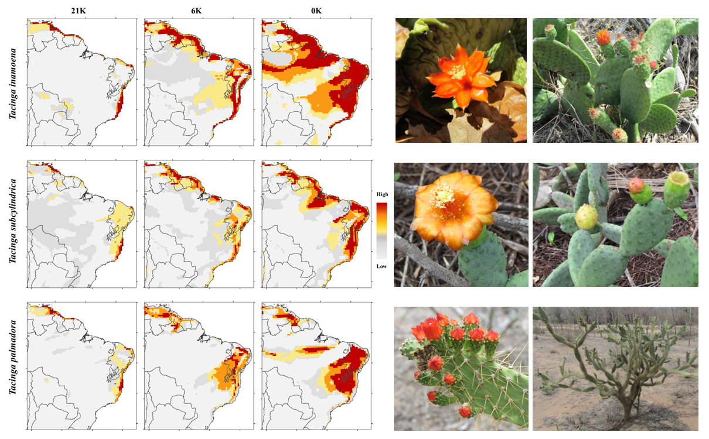
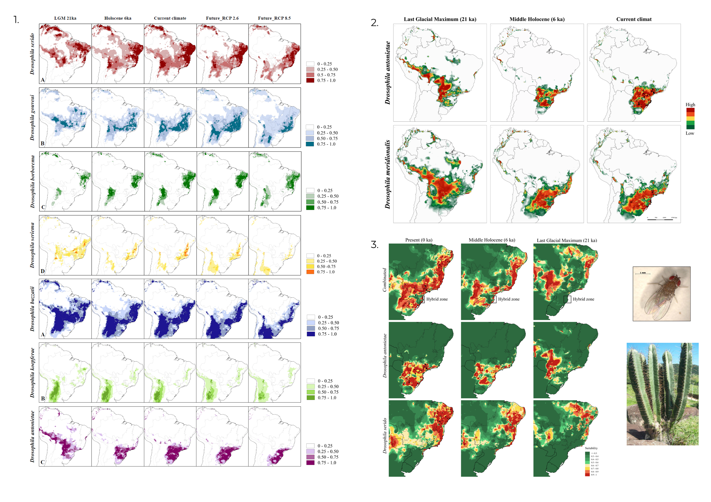

Modelagem Nicho Ecológico
A Modelagem de Nicho Ecológico (MNE) permite avaliar a expansão ou contração de habitats adequados com base nas coordenadas geográficas de
ocorrência, obtidas em bases como GBIF e
SpeciesLink.
As camadas bioclimáticas (CB), compostas por 19 variáveis relacionadas à temperatura e precipitação, estão disponíveis em plataformas como
WorldClim e CHELSA.
Diferentes modelos climáticos, como CCSM4, MIROC e MPI-ESM, representam cenários passados, presentes e futuros.
A colinearidade das CB é analisada por meio do Fator de Inflação da Variância (VIF) ou da correlação de Pearson, e a área de modelagem é definida conforme os objetivos do estudo.
A predição é realizada por meio de uma abordagem de ensemble, que combina algoritmos baseados em distância, como Domain (Distância de Gower) e Distância de Mahalanobis, e métodos de aprendizado de máquina, como Máxima Entropia (Maxent) e Máquinas de Vetores de Suporte (SVM).
Os modelos são gerados com múltiplas repetições, convertidos em mapas binários pelo limiar de menor presença (LPT) e consolidados em mapas de consenso.
Para predição dos modelos e tratamento dos dados, foram utilizados os pacotes raster, rgdal, dismo, usdm, randomForest, e rJava. A visualização e análise final dos mapas gerados foram realizadas no
QGIS.
Neste estudo, foi feito o modelo de distribuição das espécies Stylosanthes capitata e Stylosanthes macrocephala para avaliar
os impactos do aquecimento global futuro (2080–2100). A modelagem indicou que ambas as espécies sofrerão deslocamento espacial significativo e
redução das áreas de alta adequação. Embora se observe alguma expansão para novas regiões, a adequação dessas áreas é baixa, especialmente nos
cenários mais pessimistas. A S. capitata mostra maior resiliência no cenário mais otimista, mas a taxa de mudança é mais rápida do que
o esperado, colocando essas espécies em risco elevado de extinção no futuro próximo. O estudo destaca a urgência de estratégias de conservação e
manejo para mitigar os impactos das mudanças climáticas nessas espécies.
Para mais detalhes, consulte:
Artigo de Stylosanthes

Nesta pesquisa, foi investigada a história evolutiva de três espécies de Tacinga (T. inamoena, T. subcylindrica
e T. palmadora) distribuídas na Caatinga, uma região biogeográfica localizada no semiárido do nordeste do Brasil, que se destaca pelos
altos níveis de diversidade e endemismo de cactos. A modelagem indicou que as áreas de ocorrência dessas espécies no centro da Caatinga foram
reduzidas ao longo do tempo, com deslocamento para a região sudeste, em estados como Bahia, Espírito Santo, Minas Gerais e Rio de Janeiro.
A expansão das áreas dessas espécies para o Cerrado também foi prevista, devido às mudanças climáticas. Curiosamente, modelos climáticos do
passado apontaram regiões favoráveis na Venezuela, embora as espécies não estejam presentes lá atualmente. Esses resultados ajudam a entender
como o clima influenciou a distribuição das espécies ao longo da história.
Para mais detalhes, consulte:
Artigo de Tacinga

Nos estudos sobre Drosophila, a modelagem das mudanças climáticas passadas mostrou que o impacto nas distribuições das espécies foi
significativo. No estudo de D. antonietae e D. meridionalis, as rotas migratórias das espécies foram influenciadas pela dinâmica
das florestas densas, que provavelmente moldaram as migrações. Em outro estudo sobre a hibridação entre D. antonietae e D. serido,
observou-se que o contato entre as espécies ocorreu recentemente, impulsionado pelas mudanças climáticas e pela expansão das áreas secas.
No estudo das previsões futuras para o cluster de D. buzzatii, a modelagem indicou um possível declínio nas áreas adequadas, ameaçando
a biodiversidade local. Esses resultados reforçam a importância de compreender as dinâmicas passadas e como a modelagem pode nos ajudar a prever
as ameaças futuras à biodiversidade.
Para mais detalhes, consulte:
1. Artigo do Cluster de D. buzzatii
2. Artigo de D. antonietae e D. meridionalis
3. Artigo deD. antonietae e D. serido.
